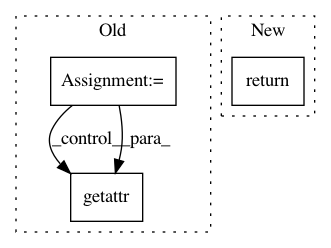

5bec95c4061946a436d965d1620306511ebba831,allennlp/data/token_indexers/pretrained_transformer_indexer.py,PretrainedTransformerIndexer,tokens_to_indices,#PretrainedTransformerIndexer#Any#Any#,70
Before Change
indices: List[int] = []
type_ids: List[int] = []
for token in tokens:
if getattr(token, "text_id", None) is not None:
// `text_id` being set on the token means that we aren"t using the vocab, we just use
// this id instead. Id comes from the pretrained vocab.
// It is computed in PretrainedTransformerTokenizer.
indices.append(token.text_id)
else:
raise KeyError(
"Using PretrainedTransformerIndexer but field text_id is not set"
f" for the following token: {token.text}"
)
if type_ids is not None and getattr(token, "type_id", None) is not None:
type_ids.append(token.type_id)
else:
type_ids = None
// The mask has 1 for real tokens and 0 for padding tokens. Only real tokens are attended to.
mask = [1] * len(indices)
result = {"token_ids": indices, "mask": mask}
if type_ids is not None:
After Change
if type_ids is not None:
output["type_ids"] = type_ids
return self._postprocess_output(output)
def _extract_token_and_type_ids(
self, tokens: List[Token]
) -> Tuple[List[int], Optional[List[int]]]:
In pattern: SUPERPATTERN
Frequency: 3
Non-data size: 3
Instances
Project Name: allenai/allennlp
Commit Name: 5bec95c4061946a436d965d1620306511ebba831
Time: 2020-01-27
Author: wuzhaofeng1997@gmail.com
File Name: allennlp/data/token_indexers/pretrained_transformer_indexer.py
Class Name: PretrainedTransformerIndexer
Method Name: tokens_to_indices
Project Name: microsoft/nni
Commit Name: 10d7ece1c34c5533262a54d20d974a3d04f0b7ce
Time: 2020-09-15
Author: 40699903+liuzhe-lz@users.noreply.github.com
File Name: src/sdk/pynni/nni/compression/tensorflow/compressor.py
Class Name:
Method Name: _instrument_model
Project Name: deepmipt/DeepPavlov
Commit Name: 8e0dea3d8fa8efecc9b3eaff721f997e08e74e57
Time: 2018-02-25
Author: yoptar@gmail.com
File Name: deeppavlov/core/commands/train.py
Class Name:
Method Name: train_model_from_config